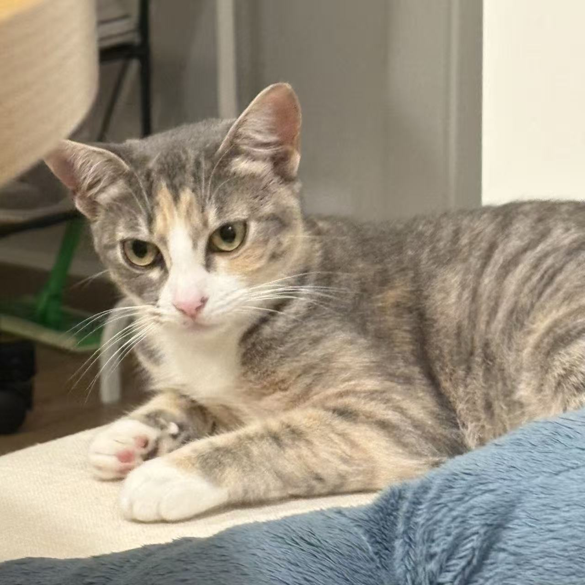
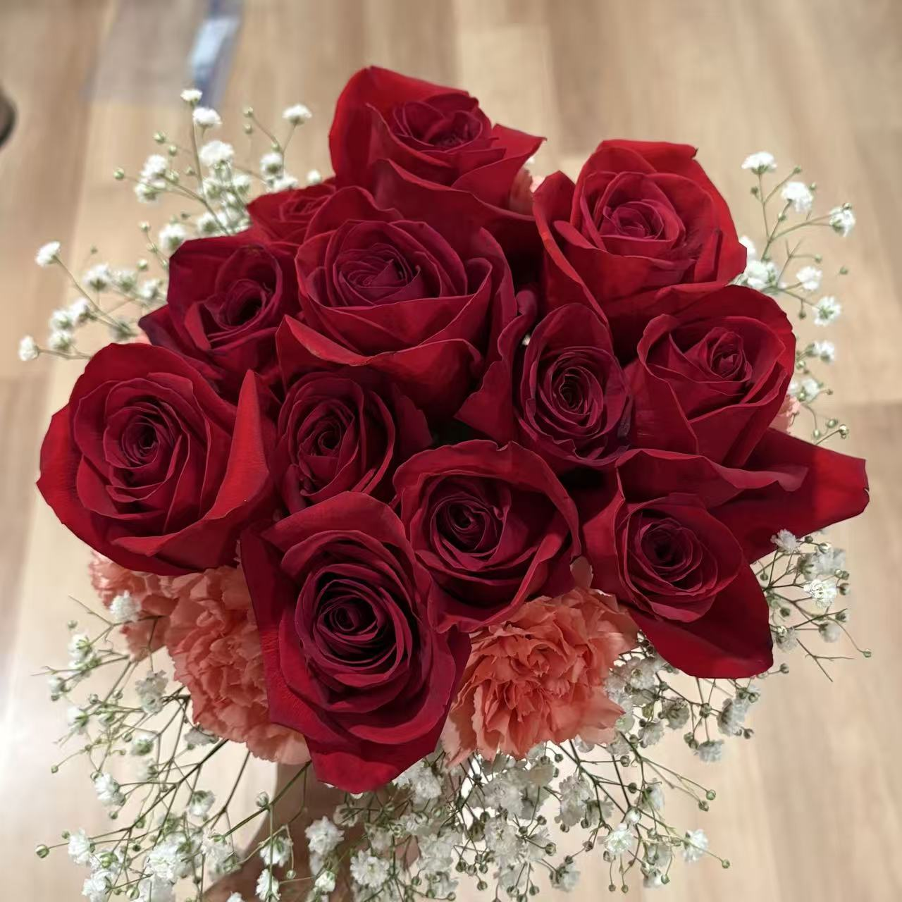
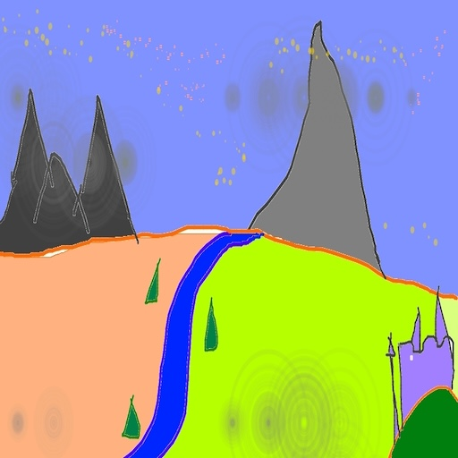
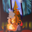
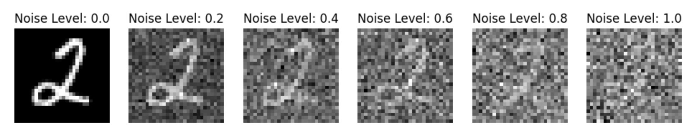
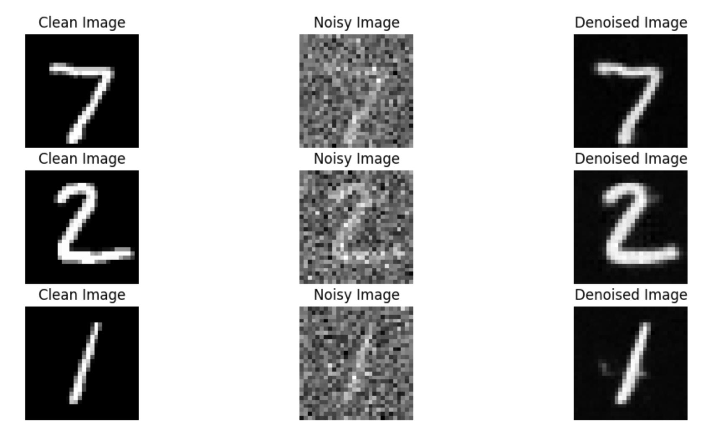
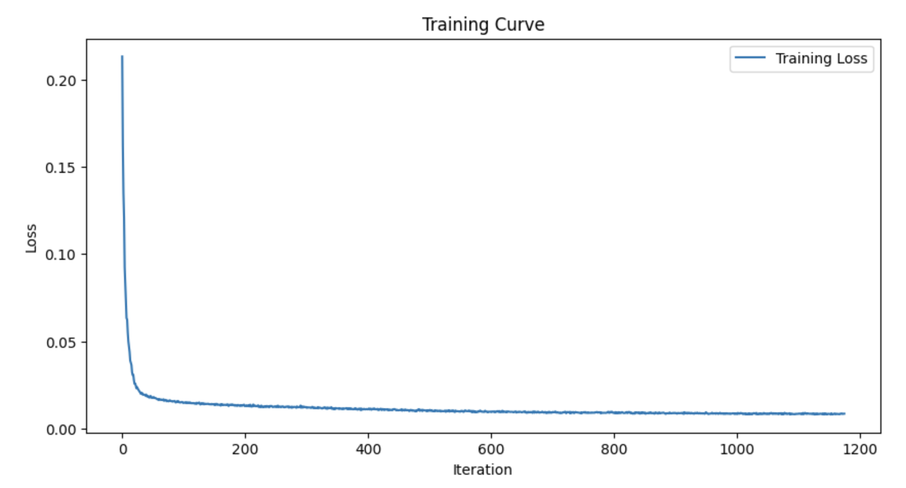
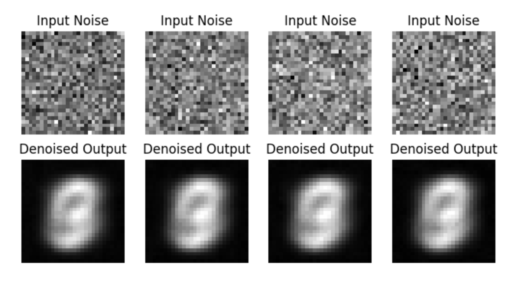
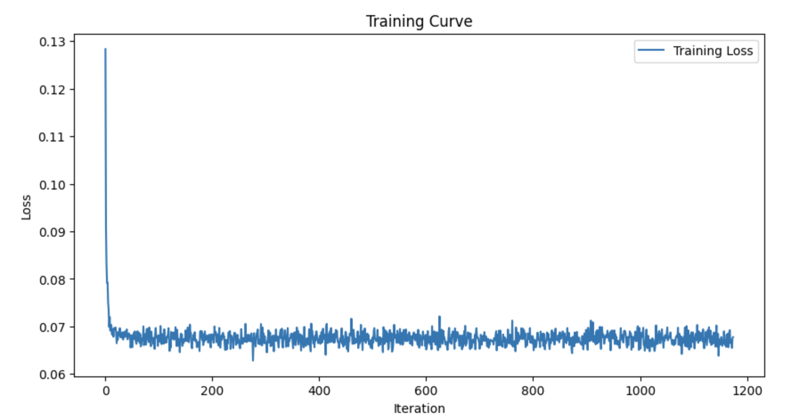

DeepFloyd IF exploration, sampling loops, image-to-image edits, inpainting, visual anagrams, and hybrid images.
Random Seed: 42
Part 0 — Prompt Exploration
Stage 1: a lithograph of waterfallsStage 2 upsampled: waterfallsStage 1: snowy mountain villageStage 2 upsampled: snowy mountain villageStage 1: people around a campfireStage 2 upsampled: people around a campfire
i_start = 1 on campanilei_start = 3 on campanilei_start = 5 on campanilei_start = 7 on campanilei_start = 10 on campanilei_start = 20 on campanileClean campanile
i_start = 1 on Ginger (my cat)i_start = 3 on Ginger (my cat)i_start = 5 on Ginger (my cat)i_start = 7 on Ginger (my cat)i_start = 10 on Ginger (my cat)i_start = 20 on Ginger (my cat)clean Ginger (my cat)
i_start = 1 on Rosei_start = 3 on Rosei_start = 5 on Rosei_start = 7 on Rosei_start = 10 on Rosei_start = 20 on Roseclean Rose
Web image — i_start=1Web image — i_start=3Web image — i_start=5Web image — i_start=7Web image — i_start=10Web image — i_start=20Web original
1.7.2 Inpainting (RePaint)
Original imageMaskArea to replaceInpainted resultInpainting Ginger (my cat)Inpainting rose
1.7.3 Text-Conditional Image-to-Image
My cat with prompt 'a photo of a dog' — i_start=1My cat with prompt 'a photo of a dog' — i_start=10My cat with prompt 'a photo of a dog' — i_start=20Campanile with prompt 'a rocket ship' — i_start=1Campanile with prompt 'a rocket ship' — i_start=10Campanile with prompt 'a rocket ship' — i_start=20Rose with prompt 'a lithograph of a skull' — i_start=1Rose with prompt 'a lithograph of a skull' — i_start=10Rose with prompt 'a lithograph of a skull' — i_start=20
1.8 Visual Anagrams
an oil painting of people around a campfire — uprightan oil painting of an old man — flippedan oil painting of a snowy mountain village — uprighta photo of a dog — flippeda lithograph of waterfalls — uprighta photo of a man — flipped
1.9 Hybrid Images
Hybrid image 1Hybrid image 2
Part B — Flow Matching on MNIST
Training and sampling UNets (time-only and class-conditioned), with required plots and qualitative samples.
1.2 Noising Images
Noising visualization (σ sweep)
1.2.1 One-Step Denoiser: Noising & Training
σ = 0.5 denoising demoTraining loss curve (σ = 0.5)
1.2.2 Out-of-Distribution Noise
OOD σ sweep results
1.2.3 Denoising Pure Noise
Pure noise denoising demoTraining loss (pure noise)
Observations: The images seem to contain the features of every number. We can interpret those images as any digit depending on the viewer's perspective. This phenomenon is likely due to the model being trained on pure noise, which lacks specific features to guide the denoising process toward a particular digit. As a result, the model generates images that are ambiguous and can be perceived as multiple digits simultaneously.